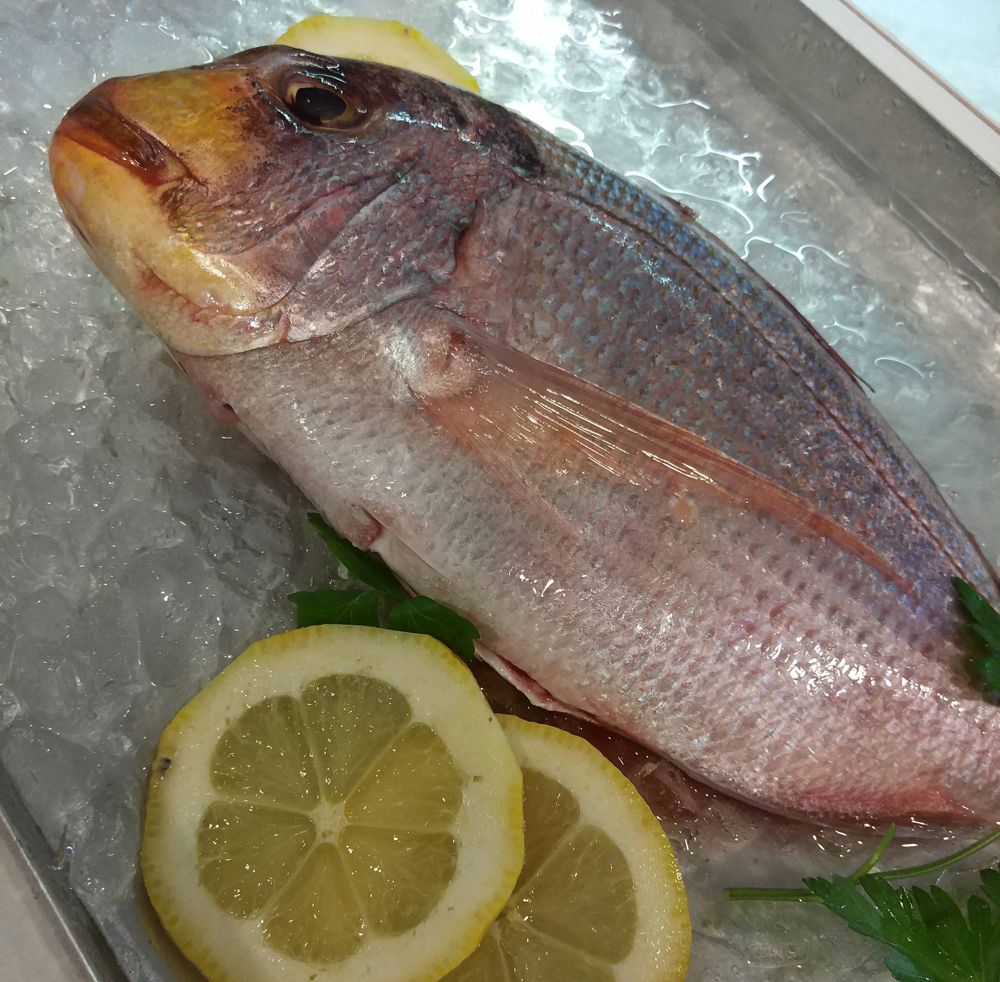

Bienvenidos a La Barca de Ca l’Ardet, un rincón privilegiado en Calafell, donde la tradición se encuentra con la creatividad.
Desde 1951, ofrecemos una experiencia culinaria única con una cocina marinera mediterránea que destaca por la frescura de sus ingredientes.
Con vistas al mar y un diseño interior que refleja nuestra herencia, cada detalle en nuestras tres salas ha sido cuidado al máximo para brindarte una experiencia inolvidable.
Bajo la dirección de Maite Pérez y Joan Nin, cada plato es una celebración del Mediterráneo.
Descubre más sobre nosotros y déjate seducir por el sabor del mar. ¡Te esperamos!
Ambiente inigualable
En La Barca de Ca l'Ardet, el ambiente está diseñado para transportar a nuestros comensales a la esencia misma del Mediterráneo.
Con una decoración que combina la calidez de la madera y los tonos azules del mar, el restaurante ofrece un espacio acogedor e íntimo
donde disfrutar de cada plato en un entorno relajado y elegante. Las mesas cuidadosamente dispuestas, la iluminación suave y el sonido
lejano de las olas completan una atmósfera que invita a compartir una experiencia gastronómica inigualable.
Cuenta con una encantadora terraza que se integra armoniosamente con su jardín, lleno de plantas cuidadosamente seleccionadas que añaden frescura
y color al entorno. Este espacio al aire libre es ideal para disfrutar de una comida, ya que ofrece ligeras vistas a la costa, creando un ambiente
relajante y acogedor. La combinación de las mesas dispuestas en la terraza y la vegetación exuberante invita a los comensales a relajarse y disfrutar
de la experiencia gastronómica en un entorno atractivo y bien cuidado.
Ingredientes de primera
En La Barca de Ca l'Ardet, la calidad de los ingredientes es el corazón de nuestra cocina. Utilizamos solo productos frescos y de origen local,
seleccionados cada día para asegurar la máxima frescura y sabor en cada plato. Desde el pescado recién capturado hasta los vegetales de temporada
y las especias aromáticas, cada ingrediente es tratado con el respeto y la dedicación que merece, preservando sus características naturales y
potenciando su sabor en recetas tradicionales con un toque moderno.
Gambas de VilanovaLenguados

Dorada
Reseñas destacadas
Estructura para mostrar reseñas
Galería de Fotos (provisional)
Comedor interiorTerraza exteriorEscalerasCigalasArroz de verdurasNavajasLangosta